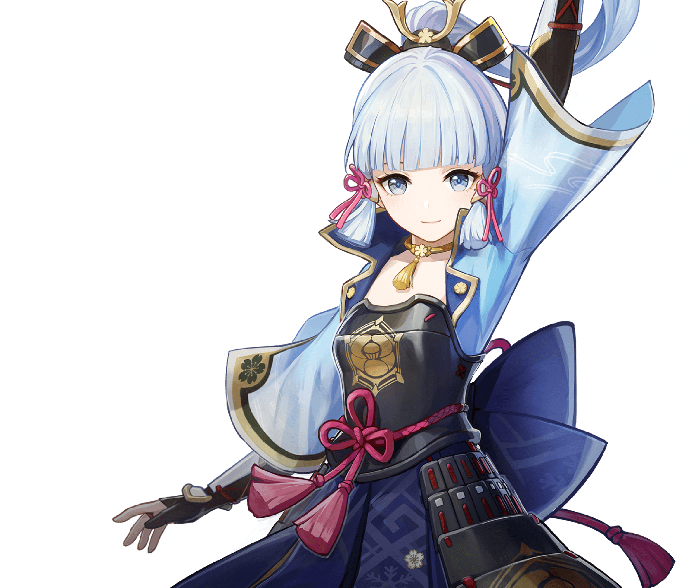

KAMISATO AYAKA
Element Effect: Cryo
Current head of the Kamisato Clan and, accordingly, the Yashiro Commissioner. He always has a way of attaining his purpose in a well-thought-out manner. However, few people understand what that “goal” he holds most dear is.

INAZUMA